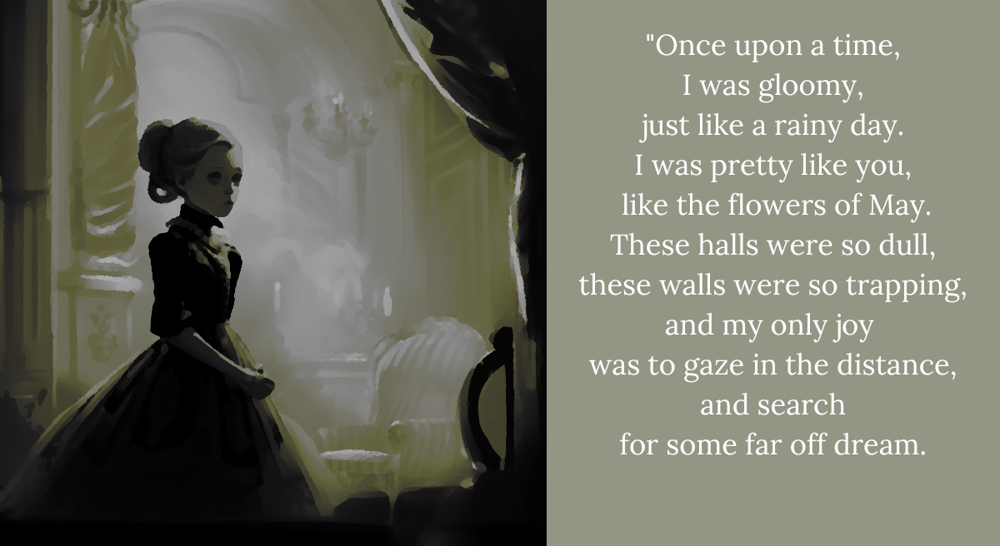

AAA1. The queen was just like the princess
“You know, my little one?
This castle seemed so big back then.
I’m sure that’s how it must be for you.
With your little feet,
and your little hands.”
The queen and princess giggled together.
Wasn’t it like this every day, once upon a time?
“When I came to this place,
I was the daughter of a viscount,
and goodness! No one, no one at all,
had a nice word to say to me.
If I spoke too loud,
they’d call me poor-bred!
If I sat too still,
they’d spread rumors that I could hardly walk!
Oh, my princess, sometimes I forget,
what you must be living through right now.”
That’s okay,
the princess thought half-asleep,
forgetting she’d even interrupted,
her mother’s social gathering.
She simply dozed off,
in her mother’s arms,
as if it were the most natural thing in the world.
It was a days she’d hold in her heart,
for so very, very long.
Because sunny days followed,
but good things don’t always happen on sunny days.
On one sunny day, the princess interrupted a meeting.
And the queen was so flustered and flabbergasted,
the princess did not hear the end of it,
for a full two hours.
And on another sunny day,
the princess broke a vase,
and stunningly, the queen said not a word.
She just became deathly quiet.
Which was much, much scarier.
But sometimes on rainy days,
when business was adjourned,
and the people of the court,
were too lazy to run kingdoms,
the princess would find herself once again,
on her mother’s lap,
happily hearing of just how, how much
the two of them were the same.
Did you know?
Once the queen herself broke a vase,
and the old baroness, that was the queen’s mother,
used to spank her with a wooden spoon!
The princess put her hands to her mouth,
and gasped a prayer of gratitude.
Thank goodness the queen had never done that to her!
The courtly days idled on,
as did the princess herself,
always looking forward to those days,
when she could sit on her mother’s lap.
And one day, the queen asked the princess:
“My darling, have you come to know,
how much the two of us are alike?”
“I have, mother!” the princess said,
telling the absolute truth.
“You were just a girl like me once,”
the princess giggled,
hardly believing the thought.
“Would you believe we all were, once, darling?
That old croon the baroness,
who never seems to croak,” she chuckled,
“and every woman and old woman who ever lived,
were just young girls like you.”
‘Of course mother,’ the princess thought.
‘Isn’t that too obvious?’
Some truths, you see, are easier to know
than they are to understand.
So the princess did not quite grasp
this little wisdom all men and women
eventually come to understand.
“I’d like us to be like each other,
even more,” the queen said.
And the queen lovingly pulled out an apple.
“This apple here, you see, it’s very special.
Because this apple, and I cannot tell you how,
this apple made me fit to be a queen.
I ate it when I was a little girl.
A girl who looked just like you do now,”
the queen said, touching the princess’s nose,
and bringing out a small giggle.
But.
The apple was scary.
The sight of it gave the princess fits.
But it looked just like a normal apple!
“O-of course mother, I will,” the princess stuttered,
because she could think of no good reason
to hurt her mother.
“But I shall do it tomorrow!
When morning comes,
I’ll eat it,
because right now I am nervous.
Y-you understand. Right mother?”
And the queen said nothing,
but kept her serene smile.
But the worm told her to shush,
to hush her mouth,
because it was sleeping just out of sight.
“Do you want to know, you nitwit?
What my home is made of?”
No, not particularly,
thought the princess,
who just wanted to wake up.
“You nitwit! I’m asking, do you want to know,
your mother’s thoughts! The queen’s dreams!
Your mommy’s feelings! The apple’s core,
this castle’s throne! Would you like to know?!”
Of course! Of course she wanted to know!
The princess was angry for the first time in her life.
Of course she wanted to know how her mother felt.
She thought about it every day.
She wanted to know so much,
she was ready to fight with this miserable worm,
squirming at the corner of her eye.
And…